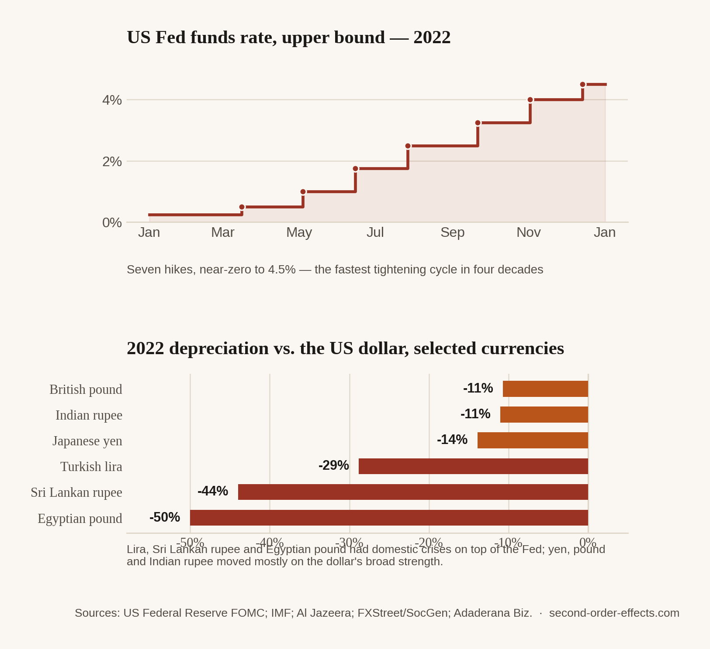

The Fed Sneezes, Emerging Markets Catch Cold: A World Priced in Dollars
Six interest rate hikes in Washington in a single year, and currencies from Ankara to Colombo fell apart, each for its own local reasons layered on top of one shared one. The rupee was one of the calmer cases.
In 2022 the Federal Reserve raised interest rates six times, the fastest tightening cycle in four decades, chasing inflation that had almost nothing to do with most of the countries about to feel it. The funds rate went from near-zero to 4.5% in under a year. What happened next wasn't a single story. It was the same mechanism playing out in a dozen different currencies at once, each landing with a different amount of damage depending on how much trouble that country was already carrying.
Why a rate hike in Washington moves a currency everywhere else
The mechanism is more mechanical than it sounds. When the Fed raises rates, US Treasury bonds start paying more interest, essentially risk-free, in the world's reserve currency. That makes the dollar more attractive to any investor holding money anywhere else on earth, including investors who had previously parked money in emerging-market equities or bonds specifically because they paid a better yield. As US rates climbed, some of that capital did exactly what capital does: it moved toward the safer, better-paying option. Investors sold local-currency assets, converted the proceeds to dollars, and the resulting swing in demand, more dollars wanted, fewer of everything else, pushed exchange rates against nearly every currency that wasn't the dollar. Nobody had to dislike any of these countries individually for this to happen. Washington just started paying better than almost anywhere else.
This gets called the "risk-free rate" problem, and it's worth understanding as a structural feature of how the world relates to US monetary policy, not a one-off accident. When the world's largest, most liquid economy makes its own currency and debt more attractive, it pulls capital away from smaller, less liquid markets almost automatically. The British pound fell nearly 11% against the dollar in 2022. The Japanese yen, backed by a central bank still holding rates near zero while the Fed climbed, fell almost 14%, its worst year in decades. The Indian rupee crossed 80 to the dollar for the first time in September, then 82 in October, closing the year down close to 11%.

The dollar shock was the floor, not the whole story
What makes 2022 worth studying rather than just noting is what happened to the countries that were already fragile before the Fed started hiking. Sri Lanka's rupee lost roughly 44% of its value that year, but Sri Lanka was also mid-collapse: foreign reserves had run dry, the country defaulted on its external debt in May 2022, and fuel queues stretched for kilometres before the currency ever became the headline. The Fed's tightening didn't cause that crisis. It made an already-terrible year for the Sri Lankan rupee measurably worse, by removing what little cushion capital inflows might otherwise have offered. Egypt's pound lost about half its value the same year, under its own weight of a widening current account gap and a currency peg that finally gave way. Turkey's lira fell nearly 29%, compounding years of unorthodox rate policy that had already made it one of the world's weakest-performing currencies.
Set against that group, the rupee's roughly 11% decline looks almost mild, and relatively speaking it was. India entered 2022 with healthier reserves and a more conventional monetary policy than any of the three countries above, and the Reserve Bank of India spent a meaningful share of those reserves defending the currency through the year specifically to avoid a Sri Lanka-style spiral. The same global force hit every currency on the chart. What decided how much damage it did was how much spare capacity each country had going in.
A decision made in a marble building in Washington, aimed entirely at US inflation, changed what a pound, a yen, a lira, and a rupee were each worth, without a single policymaker from any of those countries in the room.
Why India's version still mattered to me
This is the article where the mechanism stopped being theoretical for me, even in its milder Indian form. Since 2023 I've helped manage a slice of my family's investment portfolio, spread across equities, fixed income, and gold, and 2022's Fed cycle is a large part of why I started paying close attention to how those three assets actually move together, instead of assuming they diversify each other the tidy way a textbook promises. A weaker rupee isn't automatically bad. A cheaper currency helps exporters, and I've seen that side of it directly. But for a country that imports as large a share of its energy as India does, currency depreciation compounds the same oil and gas shocks covered elsewhere on this site rather than sitting next to them: if the dollar price of crude stays flat but the rupee weakens 11%, the import bill in rupee terms still rises by roughly that 11%, on top of whatever the dollar price did on its own. A commodity shock and a currency shock don't add. They multiply. USD/INR became a number I checked the way some people check the weather, not because I trade currencies day to day, but because it quietly decided how far money and returns actually went once they crossed between the two economies I live and work between. Reading into the lira, the rupiah, and the Sri Lankan rupee afterward was what made clear that my own experience of 2022 was the gentle end of a much longer table.
Sources
- Business Standard — rupee hits new low as Fed turns hawkish
- Zee Business — year-ender on 2022 currency depreciation, multiple currencies
- IMF — Sri Lanka country page, 2022 default and reserves crisis
- FXStreet / Société Générale — 2022 emerging-market currency performance data
- Chart data compiled from US Federal Reserve FOMC press releases (2022), IMF, and FXStreet/Société Générale currency performance tables.
Comments